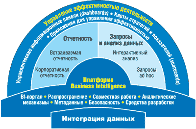
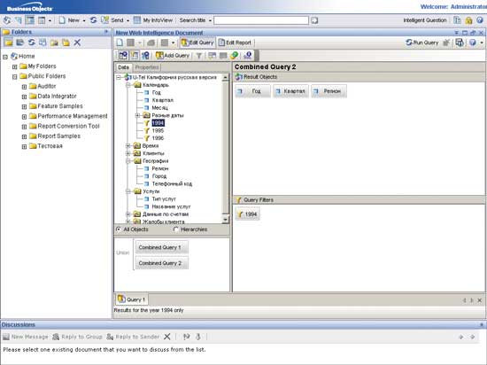
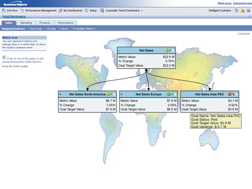
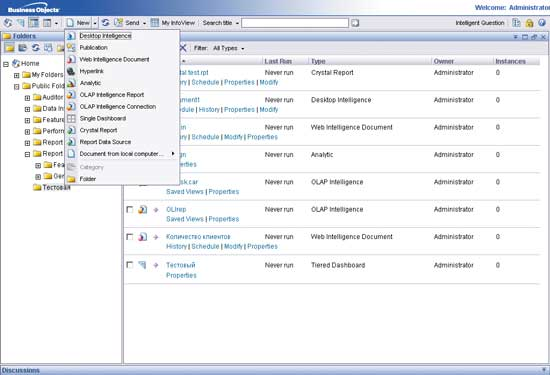

Максим Львов,
специалист по маркетингу компании "Терн"
maxim.lvov@tern.ru
Отечественный рынок аналитических систем активно развивается с середины 90-х годов прошлого века. Первоначально системы поддержки принятия решений и системы отчетности, как они тогда назывались, внедрялись в представительствах западных компаний. Это было связано с тем, что уровень их информатизации и количество накопленных к тому моменту данных в электронных форматах уже были достаточными для внедрения средств бизнес-аналитики (Business Intelligence, BI). Управленческие процессы в этих компаниях также были достаточно хорошо формализованы, хотя и отражали зачастую западную специфику. Затем подобного рода системы стали внедрять у себя и крупные отечественные предприятия, однако в большинстве своем внедрения носили фрагментарный характер и были нацелены на решение отдельных аналитических задач. Далее последовал этап внедрения хранилищ данных, или информационных хранилищ. Но полномасштабные внедрения корпоративных информационно-аналитических систем можно пересчитать по пальцам.
Сегодня, с одной стороны, значительно выросли темпы развития и конкурентность рынков, а с другой - компании начали понимать возможности и преимущества использования информации и средств ее обработки для эффективного анализа деятельности и управления. Информация стала для многих организаций основным стратегическим активом, предоставление которого людям, участвующим в процессе поддержки и непосредственного принятия решений, позволяет оперативно реагировать на изменения рынка и выбирать более эффективные решения. В связи с этим при поиске поставщика решений пристальное внимание уделяется функциональности средств BI, а также возможностям их использования максимально широким кругом корпоративных пользователей.
Business Objects - 15 лет на рынке
Компания Business Objects (http://www.businessobjects.com), образованная в 1991 г., стала одним из первых разработчиков технологии семантического слоя. Осознав тот факт, что бизнес-пользователи (руководители, аналитики и другие сотрудники) не могут пользоваться теми же самыми средствами создания отчетности и анализа информации, что и сотрудники ИТ-отделов, специалисты компании взялись за разработку ПО нового типа. Эта технология позволяет абстрагировать бизнес-пользователя от технической сложности источников данных и языка формирования запросов SQL за счет использования бизнес-терминологии при обращении к данным. В терминах Business Objects словари бизнес-терминов называются юниверсами и служат основным средством доступа пользователей к данным. За счет применения технологии семантического слоя в программных средствах BusinessObjects появилась возможность формирования запросов к данным, подготовки отчетности и анализа информации непосредственно бизнес-пользователями, без привлечения ИТ-специалистов.
С момента своего основания Business Objects фокусировалась на разработке только технологий и средств, предназначенных для управления организацией и анализа ее деятельности. Компания старается не просто отражать последние тенденции развития рынка бизнес-аналитики при выпуске новых версий своего ПО, но и быть своего рода законодателем моды в этом секторе. Так, один из следующих этапов развития программных продуктов компании был связан с широким распространением Web-технологий, и его результатом стал выпуск WebIntelligence - средства доступа к данным и анализа информации через Web, также ориентированного на работу бизнес-пользователей. Средства BusinessObjects и WebIntelligence 5-й и 6-й версии активно используются в различных компаниях и организациях по всему миру, в том числе и в России. Именно в связи с широким распространением этих инструментов традиционно компания считалась поставщиком программных средств для доступа к данным и анализа информации (query and reporting tools).
Одним из недавних приобретений Business Objects стала компания Crystal Decisions и ее программные продукты, среди которых наиболее известен генератор отчетов Crystal Reports. Эти средства широко распространены, их используют тысячи компаний по всему миру для создания корпоративной и встраиваемой в приложения отчетности. Популярность Crystal Reports не могла не сказаться на планах развития объединенной линейки продуктов Business Objects. Пользователей интересовал один-единственный вопрос: будут ли дальше развиваться средства Crystal Reports и насколько тесной будет интеграция двух линеек продуктов? Сразу же по завершении приобретения Crystal Decisions компания объявила планы интеграции, результатом которой должен был стать выпуск полностью объединенной версии - BusinessObjects XI Release 2*.
* Первый релиз этого продукта был выпущен в январе 2005 г.
BusinessObjects XI Release 2
В конце 2005 г. компания Business Objects выпустила новую версию интегрированного набора средств для построения корпоративных информационно-аналитических систем, систем отчетности и управления эффективностью деятельности на основе мониторинга KPI (рис. 1). В состав BusinessObjects XI Release 2 входят:
- инструменты создания корпоративной и встраиваемой в оперативные системы отчетности;
- средства формирования запросов к источникам данных и создания аналитической отчетности по реляционным, многомерным и другим источникам, ориентированные на бизнес-пользователей;
- инструменты для создания управленческих информационных панелей, карт стратегий и показателей, систем управления на основе мониторинга KPI;
- единая BI-платформа, лежащая в основе всех средств анализа и создания отчетности;
- средства интеграции корпоративных данных.
|  |
| Рис. 1. Линейка продуктов компании Business Objects.
|
Платформа BusinessObjects XI Release 2, сохраняя возможности предыдущих версий, упрощает инструменты бизнес-аналитики и делает их доступными более широкому диапазону сотрудников организаций. Это достигается за счет:
- расширения функциональных возможностей программных средств, предоставления различных интерфейсов и средств анализа, соответствующих требованиям и навыкам бизнес-пользователей;
- предоставления пользователям возможностей совместной работы и обмена информацией, вспомогательных средств, делающих работу в системе более удобной и интуитивно понятной;
- возможностей применения этих средств в различных функциональных областях.
"Классические" средства Business Objects
Для подготовки стандартной аналитической и управленческой отчетности, формирования запросов к данным с использованием бизнес-терминологии, а также анализа информации, включая оперативную аналитическую обработку данных (OLAP), компания Business Objects предлагает использовать ее традиционные средства Desktop Intelligence и Web Intelligence, а также новое средство OLAP Intelligence. Desktop Intelligence - переименованный "толстый" клиент, знакомый пользователям предыдущих версий под именем BusinessObjects. Это ориентированное на бизнес-пользователей средство позволяет создавать различные отчеты и анализировать данные, включая возможности детализации и обобщения, а также вращения "микрокуба" данных, на клиентской машине. В версии Desktop Intelligence XI Release 2 доступно несколько режимов работы, включая трехуровневый режим, режим клиент-сервер, а также режим работы при отсутствии соединения с сервером.
Основное развитие программных средств компании идет по пути наращивания функциональности тонкого клиента. Поэтому в новой версии Web Intelligence, средство работы через Web, обладает широкими возможностями, не уступающими Desktop Intelligence. Среди них можно отметить такие, как объединение и синхронизация данных из различных источников в рамках одного отчета (синхронизация дата-провайдеров), построение подзапросов по запросу, редактирование и написание SQL-кода вручную, представление данных в различном виде, включая размещение диаграмм, таблиц, кросс-таблиц и других объектов на одном листе отчета. Как и в Desktop Intelligence, в Web Intelligence основным способом доступа к данным служат юниверсы Business Objects (рис. 2). Существует две основные реализации этого инструмента - на основе Java и .NET. Для пользователей, которые могут работать только с простым браузером (без загрузки дополнительных апплетов), предусмотрена DHTML-версия Web Intelligence.
|  |
| Рис. 2. Использование юниверсов для доступа к данным и возможность объединения запросов в Web Intelligence.
|
Отдельно хотелось бы отметить появившуюся возможность построения юниверсов по OLAP-серверам, включая SAP BW, и построения отчетов Web Intelligence с использованием BAPI. Кроме того, для тех категорий пользователей, которым не нужно создавать собственные отчеты, но недостаточно просто просматривать уже готовые документы, в рамках системы появилось средство Web Intelligence Interactive Viewing. Оно обеспечивает возможности базовой модификации отчета: добавление столбцов, сортировку, создание новых формул, изменение типов представления информации, диаграмм и графиков.
Для того, чтобы можно было работать с многомерными серверами БД, используя их метаданные, Business Objects создала новое средство - OLAP Intelligence. В его основу было положено средство Crystal Analysis; элементы работы с OLAP-серверами были также взяты из классических средств Business Objects.
Клиент к многомерным серверам OLAP Intelligence реализован в нескольких версиях: в виде настольного приложения, Web-ориентированного инструмента или надстройки к Excel. Он обеспечивает работу пользователей при помощи native-соединений с такими серверами, как Microsoft SQL Server Analysis Services, Hyperion Essbase, IBM DB2 OLAP Server, SAP Business Information Warehouse (BW). Для взаимодействия с Oracle OLAP существует специализированное решение - Oracle OLAP Universe Builder, которое позволяет строить юниверсы на основе реляционного представления Oracle Analytic Workspaces.
Crystal Reports
Business Objects, сохранив марку Crystal Reports, интегрировала эти программные средства в свою линейку продуктов и активно развивает их наряду с остальным ПО. В числе основных возможностей Crystal Reports XI следует назвать появление функциональности динамических и каскадных пользовательских вводов. Об этой возможности, согласно опросам, касающимся улучшения программного продукта, просило абсолютное большинство пользователей. Теперь дерево параметров пользовательских вводов можно задавать динамически, т. е. нет необходимости делать для каждого отчета свои вводы, необходимые разным пользователям. В новой версии также удалось упростить процесс разработки отчетов за счет:
- возможностей интеллектуального построения графиков;
- более гибкой работы в режиме создания кросс-таблиц;
- возможностей предварительного просмотра отчетов в формате HTML до их публикации на Web;
- применения средств проверки зависимостей (dependency checker) для обнаружения ошибок в документах;
- появления нового формата экспорта отчетов - редактируемый RTF (Editable RTF) и т. д.
В части интеграции с продуктами Business Objects хотелось бы отметить появление такой функциональности, как доступ к данным с использованием юниверсов Business Objects. Таким образом, при выборе способа соединения с источниками (которых насчитывается более 35 видов) разработчик отчетов может выбрать доступные ему юниверсы и далее работать уже с ними. Еще одна функциональная возможность - так называемый браузер репозитория, который позволяет проводить обновление, управление и настройку безопасности отчетов, хранящихся в репозитории BusinessObjects Enterprise, непосредственно из модуля Crystal Reports Designer.
Еще одно нововведение - появление версии Crystal Reports Server, которая представляет собой пакетное решение для компаний малого и среднего бизнеса. Она содержит средства как создания отчетности, так и их доставки через Web, аналогичные по функциональности платформе BusinessObjects Enterprise. Однако эта версия имеет ограничения на максимальное число пользователей (20) и может устанавливаться только на один сервер (максимум 4 процессора).
Crystal Reports по-прежнему остается средством, ориентированным на ИТ-специалистов, поскольку предполагает наличие технических знаний и навыков работы с языками программирования. Это средство заняло свою нишу в линейке программных продуктов Business Objects - создание регламентной отчетности строго заданной формы и выполняющейся по расписанию, а также встраивание возможностей создания отчетности (версия Developer) в корпоративные системы и приложения. При этом наличие таких средств, как Business Views, позволяет заранее создавать некий набор объектов (содержащий определенные соединения, наборы таблиц и столбцов, а также бизнес-объекты), на основе которых пользователи могут самостоятельно создавать отчеты непосредственно в рамках портала BusinessObjects InfoView. Помимо создания отчетов с использованием Business Views, средство Crystal Reports Viewer поддерживает возможности базовой модификации отчетов, созданных в Crystal Reports Designer, аналогичные Web Intelligence Interactive Viewing.
Средства управления эффективностью деятельности
К данному классу решений относятся программные средства построения управленческих информационных панелей (dashboards), отображающих ключевые показатели эффективности деятельности компании (KPI), а также средства построения карт стратегий и карт показателей (scorecards). Концепция предоставления консолидированной и агрегированной информации руководству компании не нова. Многие из читателей, наверное, помнят такие решения, как информационные системы руководителя (Executive information systems). Они создавались специалистами ИТ-отделов под конкретного руководителя или менеджера для отображения интересующих его аспектов деятельности компании, однако имели следующие ограничения:
- фиксированное (небольшое) число ключевых показателей эффективности деятельности организации;
- отображение в основном финансовых показателей;
- возможность изменения только путем привлечения ресурсов ИТ-службы.
Другими словами, эти системы были дорогими, требовали постоянного вовлечения технических специалистов в их разработку и модификацию и обладали очень низким уровнем гибкости. С развитием технологий перечисленные выше ограничения удалось снять, в результате чего в настоящее время системы управленческих информационных панелей (рис. 3) приобретают все большую популярность.
|  |
| Рис. 3. Представление информации руководству в виде дерева ключевых показателей.
|
В данной области компания Business Objects предлагает два основных программных продукта. Это Dashboard Manager - средство построения метрик (срез ключевого показателя эффективности деятельности за определенный период времени) и их визуализации в рамках корпоративных или персональных информационных панелей в виде набора аналитик. В данном случае аналитика - это способ отображения информации. Ею может быть отчет, созданный с помощью Crystal Reports, Web Intelligence или OLAP Intelligence, спидометр, светофор, тренд, дерево метрик или любое другое представление.
Второе средство, Performance Manager, - продукт, предназначенный для создания целей, т. е. связывания метрик (фактических показателей) и плановых значений, создания карт показателей и стратегий, например, в соответствии с концепцией построения системы сбалансированных показателей (Balanced Scorecard). Компания предлагает также набор готовых приложений для решения отдельных аналитических задач (таких, как анализ продаж или финансовый анализ), созданных на основе этих средств.
Для расширения аналитических возможностей систем управленческих информационных панелей Business Objects предлагает использовать так называемые аналитические механизмы (analytic engines). Первый из них - это Set analysis, механизм анализа на основе операций с множествами. Он обеспечивает решение таких задач, как сегментирование, отслеживание и анализ данных, и может использоваться, например, в маркетинге для выяснения того, какие клиенты наиболее прибыльны и в каком сегменте они находятся в настоящее время. Второй механизм - Predictive analysis, механизм прогнозирования и моделирования. Его применение позволяет обнаруживать скрытые закономерности в бизнесе, прогнозировать их поведение, а также определять ключевые факторы, влияющие на показатели бизнеса. В Predictive analysis используются элементы математики (регрессия и временные ряды) ядра программных средств компании KXEN, специализирующейся на разработке инструментов моделирования и прогнозирования. И, наконец, Process analysis, механизм статистического анализа, используется для мониторинга показателей с использованием статистических расчетов и контрольных диаграмм. С его помощью можно реализовать, например, методологию 6 Sigma (TQM).
Информационный портал
Для бизнес-пользователей единой "точкой входа в систему", т. е. единым интерфейсом выступает информационный портал BusinessObjects InfoView. В рамках портала организовано хранение персональной и корпоративной аналитической информации, включая ее каталогизацию по папкам, привычным для пользователей Microsoft Office, или по категориям, как это было сделано в предыдущей версии ПО. Кроме того, существуют возможности поиска документов, например, по названию или ключевым словам.
В портале BusinessObjects InfoView версии XI Release 2 обеспечивается возможность просмотра и работы с содержимым следующих типов (рис. 4):
- отчеты Crystal Reports;
- отчеты Desktop Intelligence и Web Intelligence;
- отчеты OLAP Intelligence;
- аналитики и информационные панели;
- документы Microsoft Office, Adobe Acrobat, ссылки, служебные программы и т. п.
|  |
| Рис. 4. Возможности работы с содержимым различного типа в рамках портала InfoView.
|
У портала имеются и дополнительные возможности, которые обеспечивают совместную работу и обмен информацией, а также делают работу пользователей в системе более удобной и интуитивно понятной: это "Энциклопедия" (Encyclopedia), "Тематические обсуждения" (Discussions) и Process Tracker. Энциклопедия представляет собой своего рода репозиторий бизнес-метаданных содержимого портала. Для каждого из отчетов, документов, аналитик или информационных панелей могут храниться:
- общая информация об объекте, включая его название, описание, назначение и возможные варианты использования;
- бизнес-вопросы, на которые дает ответы данный документ;
- глоссарий использующихся терминов;
- заданная последовательность просмотра содержимого (например: для получения более подробной информации об объекте А смотрите отчет Б).
Тематические обсуждения дают возможность пользователю во время просмотра документа (или даже не открывая его) добавить свой комментарий или ответить на реплику коллеги. Все комментарии сохраняются вместе с документом и тут же отображаются для всех сотрудников, имеющих права доступа к данному объекту. Теперь пользователям не требуется отсылать, например, по электронной почте отчет со своими пояснениями, они могут сделать это в рамках портала InfoView.
И, наконец, Process Tracker - это средство связи аналитического содержимого с бизнес-процессами компании. Оно позволяет в визуальном режиме связать стандартизованные бизнес-процессы, которые выражены в виде набора определенных действий, с определенными отчетами или аналитиками. Затем назначаются ответственные за выполнение этих действий и определяются сроки выполнения. Это может быть, к примеру, процесс предоставления отчетности менеджерами по продажам руководителю отдела продаж, включающий этапы предоставления предварительной отчетности (одни отчеты), их корректировки и согласования (добавление комментариев к отчетам в рамках портала) и финального предоставления отчетов (другие отчеты).
BI-платформа - основа системы
BI-платформа BusinessObjects Enterprise составляет основу любой системы, в которой используются средства бизнес-аналитики компании Business Objects. Она представляет собой набор Web-служб и компонентов, которые связаны воедино при помощи интегрированной среды взаимодействия (communication framework). За основу новой версии BusinessObjects Enterprise XI была взята платформа Crystal Enterprise в силу ее сервисно-ориентированной архитектуры (Service Oriented Architecture, SOA). Так, в рамках этой архитектуры отдельные службы платформы обрабатывают запросы на доступ к данным по требованию пользователей и создают отчетность в различных модулях, другие отвечают за распределение отчетов на основе расписания и на основе событий, происходящих в системе. При этом сервисы могут работать на разных платформах, а в часы пиковой нагрузки, например, могут одновременно запускаться несколько экземпляров одного и того же сервиса.
В BusinessObjects Enterprise включена единая система администрирования - центральная консоль управления (CMC), которая представляет собой Web-ориентированную среду для общего управления инфраструктурой, ее внедрения и настройки, реализованную на платформе .NET или Java. На CMC возложено управление следующими элементами системы:
- добавление пользователей и групп, управление ими;
- определение способов аутентификации пользователей;
- настройка серверов/служб;
- управление группами серверов (кластеры);
- определение прав на объекты;
- настройка бизнес-календарей;
- управление лицензионными ключами;
- управление категориями пользователей;
- определение прав на доступ к юниверсам и соединения с данными;
- настройка пользовательских интерфейсов.
В платформу BusinessObjects Enterprise интегрированы возможности рассылки отчетов и выполнения по расписанию или по наступлении событий, а также средства аудита системы и действий пользователей. Неотъемлемая часть платформы - модуль BusinessObjects Designer, в котором происходит создание юниверсов, т. е. преобразование физической модели источников данных в логическую, содержащую наборы бизнес-терминов. Кроме того, в новой версии в рамках платформы поставляются SDK для ее настройки и интеграции с Web-серверами, серверами приложений и корпоративными порталами.
Интеграция данных
Отдельно хотелось бы сказать о средствах интеграции данных компании Business Objects, поскольку задачи консолидации информации и построения хранилищ данных неразрывно связаны с применением средств бизнес-аналитики. В 2002 г. Business Objects приобрела компанию Acta Technologies и ее средства извлечения, преобразования и загрузки данных (ETL) Data Integrator и пакетные витрины данных Rapid Marts, которые внедряются поверх корпоративных приложений SAP, Oracle, PeopleSoft и Siebel. C этого момента средства интеграции были значительно модернизированы и интегрированы с аналитическими программными продуктами Business Objects.
Среди элементов интеграции можно выделить возможность построения и обновления юниверсов Business Objects из Data Integrator, а также построения динамических витрин данных по историческим экземплярам отчетов Crystal Reports. Интеграция с платформой BusinessObjects Enterprise на уровне метаданных позволяет проводить анализ влияния изменений, происходящих в источниках, на хранилище данных, юниверсы и отчеты, или анализ происхождения данных (из какого источника данные поступили в отчет, каким преобразованиям они подверглись в процессе передачи и т. п.).
В заключение хотелось бы отметить, что четкая стратегия развития собственных решений и приобретения технологий сторонних компаний позволила Business Objects превратиться из небольшой частной компании, предлагающей средства доступа к данным и анализа информации для бизнес-пользователей, в одного из крупных мировых поставщиков ПО, имеющего обширную линейку технологических средств.